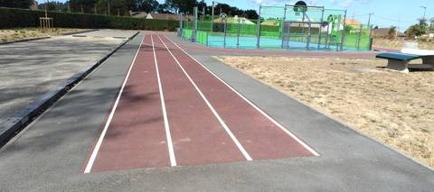
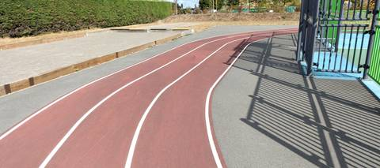
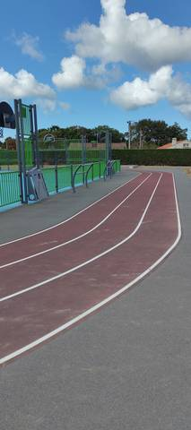

{kind=link}
{kind=link}
{kind=link}
Une petite piste, mais le revêtement est sympa même s'il reste du goudron. Il y a une grande ligne droite, et on pourrait éventuellement imaginer y faire du lancer du poids, mais c'est tout : il n'y a aucun agrès. Pas l'idéal pour un athlète adulte, ça peut passer pour des petits.
Complexe sportif Joséphine Baker (Le Clion-sur-Mer)
Avenue des Sports, 44210 Pornic · Loire-Atlantique
Complexe sportif Joséphine Baker (Le Clion-sur-Mer) est un équipement d'athlétisme situé à Pornic (Loire-Atlantique), en Pays de la Loire. Il dispose d'une piste en bitume / goudron, à 4 couloirs. L'accès est libre.
Photos



Il manque sûrement une photo
Les sautoirs et les aires de lancer sont ce que la donnée publique décrit le plus mal, et ce qu'on photographie le moins. Un gros plan du sol, une perche bâchée, un bac de sable envahi : chacun ajoute ce qu'aucun champ ne porte.
Envoyer une photoSans compte GitHubPiste
- Revêtement
- Bitume / goudron
- Développement
- 85 m — estimé d'après OpenStreetMap, non mesuré sur place
- Couloirs
- 4
- Configuration
- Plein air
Accès & services
- Accès libre
- Oui
Avis des athlètes
Site absent du recensement du ministère : les 97 équipements que Data ES déclare à Pornic ne mentionnent nulle part cet anneau, ni sous « Équipement d'athlétisme » ni ailleurs. Piste peinte autour d'un city-stade, prolongée d'une ligne droite ; aucun agrès de saut ni de lancer. Développement estimé à 85 m au couloir 1 (environ 105 m au couloir extérieur) et ligne droite d'environ 40 m, d'après le tracé OpenStreetMap et l'orthophoto IGN de 2025, non mesurés sur place.
Autres sites du département
- Centre Sportif du Val Saint Martin
- Gymnase Municipal J. Girard
- Terrain des Loisirs
- Complexe sportif Mickaël Landreau (Arthon-en-Retz)
- Complexe Sportif du Parc du Grand Fay
- Complexe de la Viauderie
Signaler une erreur ou compléter la fiche
Réf. c-josephine-baker-le-clion-sur-mer · Source : Contribution communautaire — Data ES, ministère chargé des Sports, Licence Ouverte 2.0. Les données sont déclaratives et peuvent être incomplètes : vérifiez les conditions d'accès avant de vous déplacer.